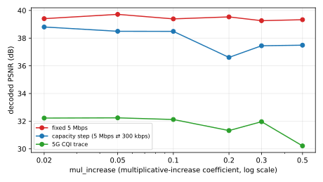
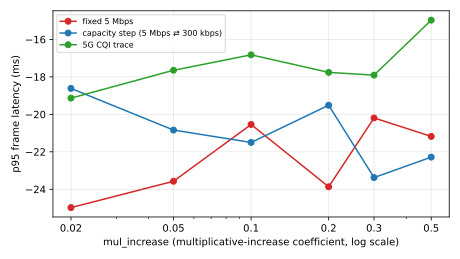

refutedGoal 2.2 (knob sensitivity), follow-up to H6/H7
Claim
H6 and H7 found the queue-delay-target is a latency knob, not a quality knob, and on the capacity-step link a looser target slightly hurt quality because data buffered through the 300 kbps trough arrives stale. SCReAM's multiplicative-increase coefficient (mul_increase) sets how fast the controller ramps its rate back up after capacity returns. A more aggressive ramp should recover picture quality faster after the step, so on the capacity-step network decoded PSNR should rise with mul_increase and swing more than on the fixed-link control, while p95 latency stays bounded.
A faster ramp does not recover quality on the capacity-step link. Decoded PSNR is highest at the slowest ramp (mul_increase 0.02 gives 38.8 dB) and declines as the ramp gets more aggressive, bottoming at 0.2 (36.6 dB) and recovering only partially to 37.5 dB at 0.5. It never rises above the slow-ramp baseline, so the prediction that PSNR rises with the ramp is refuted.
The fixed-link control behaved as predicted. With no capacity change, ramp speed barely moves PSNR (39.3 to 39.7 dB, swing 0.46 dB). That the effect appears only on the capacity-step link (swing 2.20 dB) confirms it is a real network-dependent response, not a workload artifact. The 5G trace is also non-rising (32.2 down to 30.2 dB, swing 2.03 dB).
Two SCReAM knobs now fail to be quality levers for this workload: the queue-delay-target (H6, H7) and the multiplicative-increase ramp (H8). If anything a more aggressive ramp slightly hurts on the capacity-step link, consistent with overshoot causing queue buildup and loss so frames arrive stale through the 300 kbps trough. The conservative slow ramp wins.
Limitations
Mean PSNR is whole-run, not windowed to the post-step recovery phase. A real recovery effect should still register as a higher whole-run mean, but a windowed metric would be sharper.
Workload-specific (realmotion-avi, 1280x1024 MJPEG, 10 fps, 60 s) and ceiling-specific (loose 4000 kbps). mul_increase sweeps {0.02, 0.05, 0.1, 0.2, 0.3, 0.5}; the default is 0.05.
3 reps per cell; effects smaller than the run-to-run spread are not resolved.
Absolute latency carries the aum/veda clock-skew artifact (as in H4/H6/H7); the comparison across mul_increase values within one sweep is unaffected.
Figures

Decoded PSNR vs mul_increase (ramp aggressiveness). The fixed 5 Mbps link is the control, where ramp speed should not matter; the capacity-step link is where a faster ramp should recover quality after the step.

p95 frame latency vs mul_increase. The within-sweep trend is what matters; the absolute offset carries the aum/veda clock-skew artifact.
Tables
Decoded PSNR (dB) by mul_increase
network
mul 0.02
mul 0.05
mul 0.1
mul 0.2
mul 0.3
mul 0.5
fixed 5 Mbps
39.41
39.72
39.39
39.53
39.26
39.33
capacity step (5 Mbps ⇄ 300 kbps)
38.80
38.49
38.49
36.61
37.45
37.49
5G CQI trace
32.22
32.24
32.12
31.32
31.96
30.21
p95 frame latency (ms) by mul_increase
network
mul 0.02
mul 0.05
mul 0.1
mul 0.2
mul 0.3
mul 0.5
fixed 5 Mbps
-24.98
-23.57
-20.54
-23.87
-20.19
-21.18
capacity step (5 Mbps ⇄ 300 kbps)
-18.62
-20.84
-21.50
-19.51
-23.37
-22.28
5G CQI trace
-19.13
-17.65
-16.82
-17.76
-17.91
-14.97
Experimental setup
h8-mulinc-sweep-static
mul_increase (ramp) sweep on the static network, loose 4000 kbps ceiling.